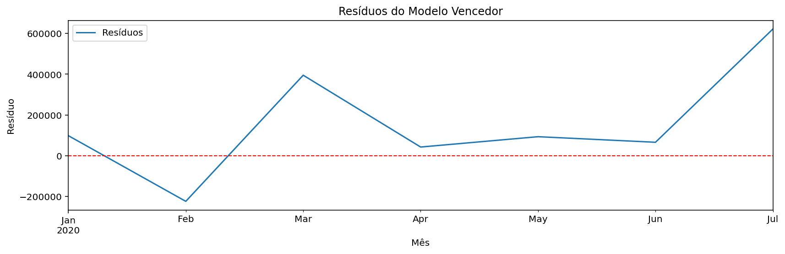

Relatório de Série Temporal - Retail Mensal Total
Dataset: Retail and wherehouse Sale.csv • Variável: Total Sales (retail + transfers + warehouse) • Frequência: Mensal • Horizonte: 3 meses
Resumo dos Dados
count: 9
mean: 136.548,85
std: 226.074,85
min: 0,00
25%: 0,00
50%: 0,00
75%: 182.334,20
max: 595.339,95
n pontos mensais: 9
Período coberto: 2020-01 a 2020-09
Métricas no Conjunto de Teste
| Métrica | Valor |
|---|
| MAE | 816.209,26 |
| RMSE | 827.095,51 |
| MAPE (%) | 5.642,90% |
Descrição do Modelo
Holt-Winters (tendência aditiva, sem sazonalidade) Atenção: série curta (menos de 24 meses); previsão de curto prazo e sem sazonalidade anual confiável.
Análise de Resíduos
Ljung-Box p=0,2234; Jarque-Bera p=0,8312; Breusch-Pagan p=0,5138

Série Original

Previsão para os Próximos 3 Meses — dataset: Retail and wherehouse Sale.csv

Valores Previstos
| Mês | Previsão |
|---|
| 2020-10 | 75.346,93 |
| 2020-11 | 50.960,96 |
| 2020-12 | 26.574,99 |
Treino vs Teste (Previsão no Teste)